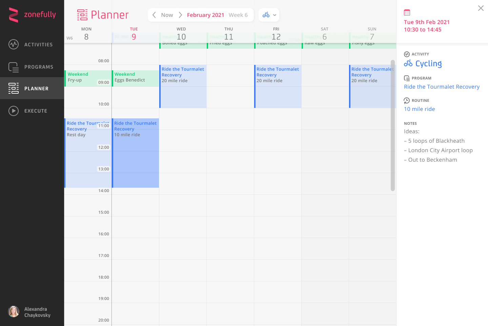
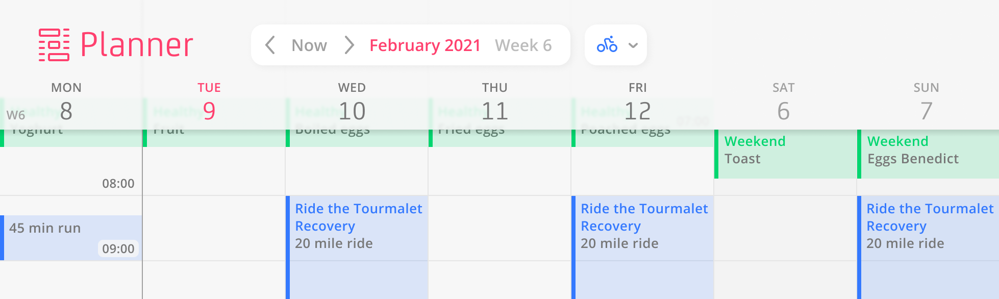
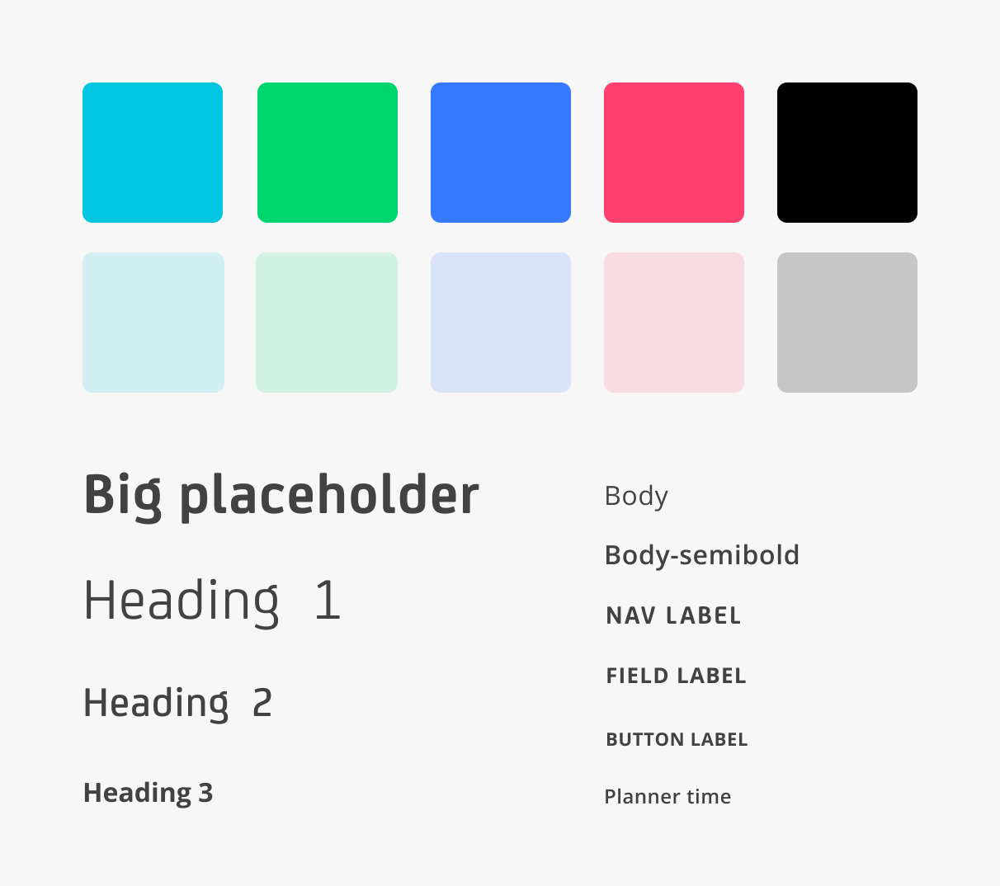

About
Connecting the bigger goal to the next action
Zonefully’s founder had developed a conceptual model for connecting long-term goals with recurring activities. He brought me in to turn that model into a usable interface.
Activities represented the things people wanted to plan and track.
Programmes grouped Routines into sequences.
Routines could then be applied to a calendar view, called the Planner.
For a cycling goal, that could mean training and recovery programmes containing individual rides and rest days. The design challenge was to make that hierarchy usable: people needed to work on an individual routine, understand how it fitted into a programme, and see where it belonged in their calendar.
1 minute demo
Design decisions
Expanding cards and layers
Connected, expanding cards kept routines alongside their parent programme. Activity colours and breadcrumbs showed where each item belonged, while prompts guided people through creating a programme.



Design details
Try some interactions

